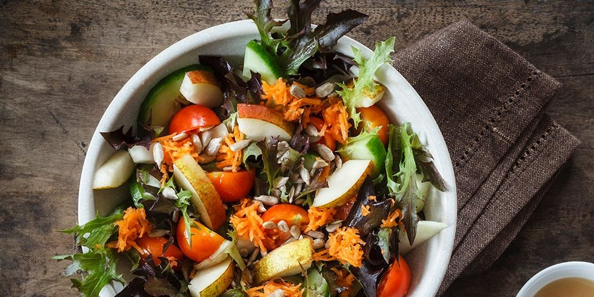

VEGETABLE SALAD

Benefits of Vegetable Salad
Salads provide plenty of bulk or roughage to aid good digestion and elimination. This regularity will help you grow stronger and more healthy and beautiful.
Steps To Make Vegetable Salad
- Take a clean bowl.
- Try adding blanched, lightly steamed or roasted veggies like broccoli, french beans, corn, cauliflower, baby corn.
- Add lentils, beans,pea for more protein.
- Grate some of the vegetables for different texture.
- Add marinated veggies like artichoke hearts for tang, or other veggies like raddish for some pungency.
- Swap in your own favorite combintions of dried fruits , nuts and seeds.
- Use fresh conriander or chives instead of parsley.